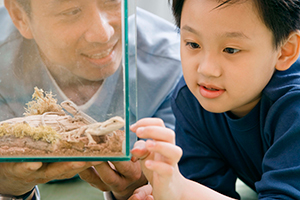
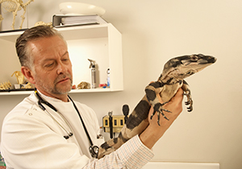
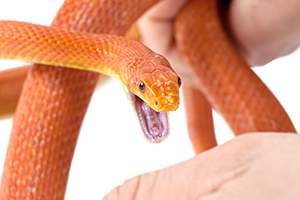
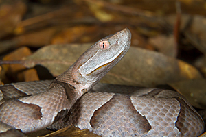
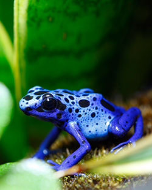

Reptiles and Amphibians
 ShareCompartir
ShareCompartir
Credit: CDC would like to thank Kristine Smith, DVM, Diplomate of the American College of Zoological Medicine, for her careful review of these pages.
Millions of households in the United States own at least one reptile or amphibian. Reptiles include turtles, lizards, and snakes, and amphibians include frogs, salamanders, and caecilians.
Reptile and amphibian owners should be aware that their pets may carry germs that make people sick. One important germ is Salmonella. Salmonella is normally in the digestive tract of healthy reptiles and amphibians, but it can cause infections in people who have contact with reptiles, amphibians, and their environments, including the water from terrariums or aquariums where they live.
If you decide that a reptile or amphibian is the right pet for you, it will be very important that you learn how to properly take care of it and become aware of diseases that it might carry. With routine veterinary care and some simple habits, you can reduce your risk of getting sick from touching, petting, or owning a reptile or amphibian.
Salmonellosis is the most common disease associated with reptiles and amphibians that can cause human illness. Click the links below to learn about salmonellosis and some other zoonotic diseases of reptiles and amphibians.
Aeromonas spp.
Aeromonas is a type of bacteria that is commonly found in fresh water ponds and aquariums. This germ can cause disease in fish and amphibians. Aeromonas can cause discoloration of the limbs of amphibians and fins of fish. It can also cause internal bleeding in these aquatic animals.
People can become infected through open wounds or by drinking contaminated water. Young children and adults with weak immune systems are most commonly affected and may have diarrhea or blood infections.
Maintaining good water quality in aquariums, promptly removing dead fish, and practicing healthy habits, including hand washing, will reduce the risk of Aeromonas infection.
Mycobacteriosis(Mycobacterium marinum)
Mycobacterium marinum spreads to fish, reptiles, and people through contaminated water or contact with infected animals. Infected animals may not show any signs of disease. Some affected animals develop open sores on their skin or have deformed bones.
People can become infected with Mycobacterium marinum by having direct contact with infected animals or contaminated water (for example, contaminated ponds or aquariums). The most common sign of infection is development of a skin infection. In very rare cases, the bacteria can spread throughout the body systems. Infections progress slowly and may get better on their own. In some instances, antibiotics and surgical wound treatments are required to prevent deep infection.
Salmonellosis (Salmonella spp.)
Salmonella spreads to people and animals through contaminated food or contact with the stools of certain animals, including reptiles and amphibians. An animal’s aquarium or terrarium may also be a source of Salmonella. Salmonella can be found in healthy reptiles and amphibians and doesn’t usually make them sick.
People exposed to Salmonella may have diarrhea, vomiting, fever, or abdominal cramps. Infants, elderly persons, and people with weakened immune systems are more likely than others to develop severe illness.
Some reptiles and amphibians can produce venoms or toxins as a means of protection. These substances are dangerous to humans and should be considered when purchasing a new pet. Read more about the dangers of venoms and toxins of reptiles and amphibians on the Prevention tab.
In this section
Healthy habits
CDC recommends washing your hands after you have handled reptiles, amphibians, or their habitats.
- Always wash your hands thoroughly with soap and water after handling reptiles, amphibians, and their habitats. Be sure to help children wash their hands properly. If soap and water are not readily available, use hand sanitizer
 immediately and wash hands thoroughly as soon as possible. Thoroughly washing your hands will reduce your risk of getting sick from a disease spread to you by your pets.
immediately and wash hands thoroughly as soon as possible. Thoroughly washing your hands will reduce your risk of getting sick from a disease spread to you by your pets. - Wash your hands thoroughly with soap and running water after:
- Touching or feeding reptiles and amphibians.
- Handling the area where reptiles and amphibians live and move.
- Touching water from the terrarium or aquarium of the reptile or amphibian.
- Because they can spread germs like Salmonella, reptiles and amphibians should be kept out of childcare centers, kitchens, and other food preparation areas.
- Do not let children younger than 5 years of age handle or touch reptiles and amphibians without supervision. Children younger than 5 years of age are more likely to get sick from exposure to germs like Salmonella.
- Don’t keep terrariums or aquariums for amphibians and reptiles in a child’s bedroom, especially in bedrooms of children younger than 5 years of age.
- Prevent reptile bites and scratches.
Before choosing a pet
- Realize that reptiles and amphibians might not be suitable for your family because of their risk for spreading disease. This is particularly true if young children, pregnant women, or persons with weak immune systems are living in the household. Persons with weak immune systems may include the elderly, people with an illness such as diabetes or HIV/AIDS, or those undergoing chemotherapy.
- Families expecting a new child should transfer the care of their pet reptile to a trusted family member, friend, or neighbor before the infant’s arrival.
- Check state, local, and property laws before selecting or purchasing a reptile or amphibian. Some reptiles or amphibians may not be allowed in apartments or rental homes.
- Research and learn how to properly care for reptiles and amphibians before purchase or adoption. Ask your veterinarian about the proper food, care, and environmental requirements of the pet you are interested in purchasing.
- Be aware the reptiles and amphibians can shed Salmonella and other germs in their stools even if they appear healthy. Plan to clean up after your pet frequently.
Housing your reptile or amphibian
- It is important that you provide a safe, warm, and comfortable environment for your reptile or amphibian to live in.
- Reptiles and amphibians often have very specific requirements for their habitat.
- Learning about and proper management of your reptile and amphibian and taking good care can of the animal decrease your pet’s stress and chance of illness.
- To prevent contamination, keep amphibians and reptiles out of kitchens and other areas where food and drinks are prepared, served, or consumed.
- Do not allow reptiles or amphibians to roam freely throughout a home or living area.
- Keep pet reptiles and amphibians from interacting with wild animals. 
- Be aware that reptile and amphibian terrariums and aquariums can be contaminated with Salmonella and other germs.
- Tanks, feeders, water containers, and other equipment or materials used when caring for amphibians and reptiles should be cleaned outside the home.
- If bathtubs are used for these purposes, they should be cleaned thoroughly and disinfected.
Monitor your pet's health
- Visit a veterinarian experienced in herpetology for routine evaluation and care to keep your reptile or amphibian as healthy as possible. A veterinarian will not be able to prevent your reptile or amphibian from shedding Salmonella because Salmonella is a normal bacteria found in healthy reptiles.
- If your reptile or amphibian becomes sick or dies soon after purchase, take your pet to the veterinarian promptly and inform the pet store or breeder about the pet’s illness or death. Consider waiting before purchasing or adopting another pet. Do not use the terrarium or aquarium until it has been properly cleaned and disinfected.
What to do if you no longer want your pet reptile or amphibian
- Do not release your pet outdoors. Most reptiles and amphibians released outdoors will die, and some grow to become a threat to natural wildlife populations.
- Find a new home for your pet:
- Contact a nearby pet store for advice or for possible returns.
- Consider giving your pet to another reptile or amphibian owner.
- Contact a local aquarium or zoo to see if they would accept your pet.
Reptile bites and scratches
Not all reptiles have teeth, although bites from the ones that do can be very dangerous, some even venomous (venoms are poisons made by some animals). Reptiles without teeth, like most turtles, are still capable of painful bites.
Bites from animals with teeth can be very dangerous because they can spread germs and other toxic substances from the mouth of the animal to the wound. For more information about how to respond to snake bites. visit this link.
What to do if you are bitten or scratched by a reptile or amphibian
Germs can be spread from pet bites and scratches, even if the wound does not seem deep or serious. If you are bitten or scratched by a reptile or amphibian, you should:
- Wash wounds with warm soapy water immediately.
- Seek medical attention, especially if:
- the animal appears sick.
- the wound is serious.
- the wound becomes red, painful, warm or swollen, or
- the animal is known to be venomous or produce toxic substances.
Ensure that the pet is seen by a veterinarian if it becomes sick or dies after biting a person.
Reptile and amphibian venoms
CDC does not recommend keeping venomous animals as pets. 
Venoms are a defense that snakes and amphibians use to protect themselves from any potential dangers or harm in their environment.
Venomous animals can sometimes be easily identified by their bright colorations and markings, such as the poison dart frog and coral snake, although not all venomous animals are so easy to identify. Animals can transmit venoms through bites or through contact with their skin or saliva. For example, poison dart frogs are beautiful animals that excrete deadly toxins through their skin. It has been reported that one frog can produce enough toxin to kill 10 adults.
There are many different types of venomous reptiles and amphibians throughout the world. In the United States, there are only four types of venomous snakes (coral snakes, rattlesnakes, cottonmouths, and copperheads) and one venomous lizard (the Gila monster), though non-native animals have found their way into the United States through the pet trade.
Before bringing a venomous pet home, you should always consider the unpredictable nature of these animals and be aware that treating a bite from a venomous animal is difficult. Venoms are very toxic and can have severe and life-threatening effects. Vials of antivenom, used to treat some reptile bites, can cost hundreds of dollars and may not be available at community hospitals.
If you choose to keep venomous pets, you should make a list of all the hospitals in your area that stock anti-venom for the type of pet you are getting. Put a list of those hospital phone numbers and addresses somewhere easily found like on your refrigerator or side of your pet’s habitat.
Learn more about venomous snakes, symptoms associated with snake bites, and first aid techniques.
What should I do if I have been bitten by my venomous animal or have gotten venom on my skin?
- Seek immediate medical attention (even if the bite or area affected does not seem serious).
- Call your healthcare provider as soon as possible so that they can prepare the anti-venom.
- Tell your health care provider you were bitten by a venomous pet.
- Be as clear as possible about the type, colors, and markings of your pet.
- Remain as calm and still as possible until you can be treated by a healthcare provider.
- The sooner you go to the hospital, the easier it will be for your health care provider to treat you and for you to recover.
- For more information about venomous snake bites and how to prevent them, visit this link about venomous snakes.
Publications and materials
Brochures and posters
Selecting an Amphibian
Brochure, American Veterinary Medical Association
Selecting a Reptile
Brochure, American Veterinary Medical Association
Safe Reptile Handling
Poster; Pet Industry Joint Advisory Council
Reptile and amphibian-associated outbreaks
Lizard-Associated Salmonellosis – Utah. Morbidity and Mortality Weekly Report. 1992 Aug 21; 41(33):610-611.
Multistate Outbreak of Human Salmonella Typhimurium Infections Associated with Aquatic Frogs --- United States, 2009 . Morbidity and Mortality Weekly Report. 2010 jan 8; 58(51 &52):1433-1436.
Multistate Outbreak of Human Salmonella Typhimurium Infections Associated with Pet Turtle Exposure --- United States, 2008. Morbidity and Mortality Weekly Report. 2010 Feb 26; 59(07):191-196.
Multistate Outbreak of Human Salmonella Infections Associated with Exposure to Turtles --- United States, 2007--2008. Morbidity and Mortality Weekly Report. 2008 Jan 25; 57(03):69-72.
Reptile-Associated Salmonellosis --- Selected States, 1998--2002. Morbidity and Mortality Weekly Report. 2003 Dec 12; 52(49):1206-1209.
Reptile-Associated Salmonellosis -- Selected States, 1996-1998. Morbidity and Mortality Weekly Report. 1999 Nov 12; 48(44):1009-1013.
Recent Multistate Outbreaks of Human Salmonella Infections Acquired from Turtles: A Continuing Public Health Challenge. Clinical Infectious Diseases 2010; 50(4):554-559.
Salmonellosis Associated with Pet Turtles --- Wisconsin and Wyoming, 2004. Morbidity and Mortality Weekly Report. 2005 Mar 11; 54(09):223-226.
Salmonella enterica serotype Javiana infections associated with amphibian contact, Mississippi, 2001, Epidemiology and Infection. 2004 Apr; 132(2):273–281.
Turtle-Associated Salmonellosis in Humans --- United States, 2006--2007. Morbidity and Mortality Weekly Report. 2007 Jul 6;56(26):649-652.
Podcasts
Amphibians
Water Frogs, Aquariums, and Salmonella -- Oh My!
CDC Kidtastics Podcast
Don't Kiss a Frog!
CDC Kidtastics Podcast
Spanish version: ¡No beses al sapo!
Salmonella Infection and Water Frogs
CDC Podcast
Minute of Health Podcast: Wash Away Salmonella
CDC Minute of Health
Reptiles
The Trouble with Turtles
CDC Podcast
Minute of Health Podcast: The Trouble with Turtles
CDC Minute of Health
Additional information
AVMA Market research statistics – U.S. pet ownership – 2007
American Veterinary Medical Association
Venomous snakes
CDC National Institute for Occupational Safety and Health
CDC Snakes: Pictorial Key to Venomous Species in the United States [PDF - 4 pages]
CDC National Institute for Occupational Safety and Health
Habitattitude
An organization in partnership with U.S. Fish and Wildlife Service and the National Oceanic and Atmospheric Administration that provides information about conservation and includes resources for finding new homes for unwanted aquatic pets
Importation of Turtles
Outlines information about bringing a turtle, snake, or lizard into the United States. CDC Animal Importation site
Gila monster
Information from the U.S. Fish and Wildlife Service about venomous lizards
Poison dart frogs: Jewels of the Rainforest
U.S. Fish and Wildlife Service
How to Prevent or Respond to a Snake Bite
CDC National Centers for Environmental Health and Injury Prevention and Control
- Page last reviewed: October 1, 2015
- Page last updated: October 1, 2015
- Content source: